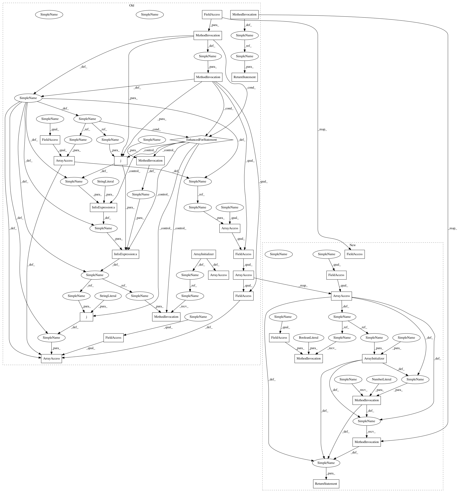

fc4917ae8a7320fc9a258b50d82a177ed2124a91,category_encoders/backward_difference.py,BackwardDifferenceEncoder,backward_difference_coding,#,240
Before Change
for switch in mapping:
col = switch.get("col")
mod = switch.get("mapping")
new_columns = []
for i in range(len(mod.columns)):
c = mod.columns[i]
new_col = str(col) + "_%d" % (i, )
X.loc[:, new_col] = mod[c].loc[X[col]].values
new_columns.append(new_col)
old_column_index = cols.index(col)
cols[old_column_index: old_column_index + 1] = new_columns
cols = ["intercept"] + cols
X = X.reindex(columns=cols)
return X
After Change
col = switch.get("col")
mod = switch.get("mapping")
base_df = mod.loc[X[col]]
base_df.set_index(X.index, inplace=True)
X = pd.concat([base_df, X], axis=1)
old_column_index = cols.index(col)
cols[old_column_index: old_column_index + 1] = mod.columns
cols = ["intercept"] + cols
return X.reindex(columns=cols)
In pattern: SUPERPATTERN
Frequency: 1
Non-data size: 31
Instances
Project Name: scikit-learn-contrib/categorical-encoding
Commit Name: fc4917ae8a7320fc9a258b50d82a177ed2124a91
Time: 2018-12-21
Author: jcastaldo08@gmail.com
File Name: category_encoders/backward_difference.py
Class Name: BackwardDifferenceEncoder
Method Name: backward_difference_coding